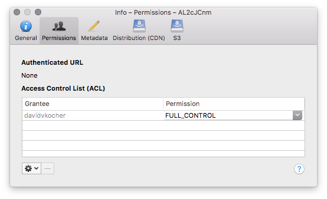

Info Window¶
Select the file in the browser and choose File → Info (macOS ⌘-I Windows Alt+Return) to display detailed information on s file in a tool window. You can choose in the Preferences in the Browser tab to use the info window as an inspector of the currently selected files in the browser or open a new panel window to compare different files.
General Panel¶
Change filename¶
Type in the new filename and press Tab to leave the text field and commit the change.

Calculate folder size¶
Calculate the size recursively of all contained files.
UNIX Permissions (FTP/SFTP)¶
Change the permissions on a particular file or folder when connected to a FTP or SFTP server. You can also select multiple files in the browser to edit permissions. Click the checkboxes or enter the octal notation. The recursive options will update all files within a folder but will nor change the executable bit for files if not already set when recursively updating a directory.

Access Control List (ACL)¶
Edit access control list for fine grained user permissions when connected to Amazon S3, Google Cloud Storage, or Google Drive.
{kind=link}
CDN Panel¶
Manage Amazon CloudFront and Rackspace/Akamai distributions (CDN) respectively.
Amazon S3 Panel¶
Setting specific to the Amazon S3 service.
The geographic location of the bucket.
Publicly accessible URL to the file with a validity of 24 hours. Signed URLs with a different life are available in the Edit → Copy URL menu.
Torrent URL to the file.
Enabling access logs for the bucket.
Choose storage class (Reduced Redundancy Storage (RRS)). Settings will be applied recursively if a folder is selected.
Configure bucket versioning.
Configure Multi-Factor Authentication (MFA) Delete.
COnfigure Transfer Acceleration.

Metadata (HTTP headers)¶
View and modify metadata attributes of files.
Any non-standard HTTP header values are (transparently) prefixed with the following values following the guidelines from the different providers:
Values are prefixed with
x-amz-meta-for S3 and Google Storage.Values are prefixed with
X-Object-Meta-for CloudFiles.